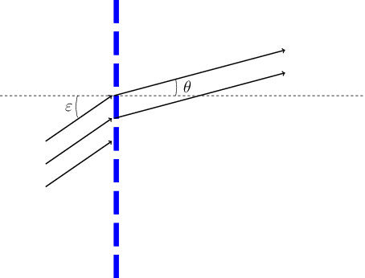

Red de difracción
Contenido
15. Red de difracción¶
En el estudio de los efectos de difracción, hemos considerado anteriormente qué ocurre cuando una onda electromagnética incide sobre una abertura de cierto tamaño. Vamos ahora a deducir la irradiancia que observaríamos si en vez de una única abertura, tuviésemos un número muy grande \(N\) de ellas. En lo que sigue vamos a considerar por tanto que tenemos un haz plano monocromático, de longitud de onda \(\lambda\), que incide perpendicularmente a un conjunto de rendijas con un cierto tamaño \(b\) y una separación entre ellas \(d\). A este último parámetro le denominaremos paso de la red.
{kind=link}
Antes de deducir las expresiones del campo y la irradiancia para este caso, vamos a intentar averiguar qué podríamos esperar en este caso. Si tenemos un cierto número de rendijas sobre las que incide una onda plana, cada una de ellas, producirá un campo eléctrico en un punto \(P\) suficientemente alejado de la rendija (es decir, trabajamos en el régimen de Fraunhofer), el cual sabemos cuál es su expresión.
Como en vez de una única rendija, tenemos en esta ocasión \(N\) de ellas, los campos producidos por cada una de las rendijas se sumarán (o dicho de otro modo, interferirán) en \(P\), con una diferencia de fase entre ellos dada por la diferencia de camino que tienen que recorrer para llegar a \(P\). Por tanto, obtendremos máximos de irradiancia cuando todas estas ondas emitidas por cada una de las rendijas lleguen en fase entre sí, o lo que es lo mismo, cuando la diferencia de camino entre dos de ellas sea un múltiplo entero de \(\lambda\).
Si observamos la figura, vemos que esta diferencia de camino \(\Delta\) es igual a \(d sen(\theta)\) donde \(d\) hemos ya mencionado que es el paso de la red, y \(\theta\) es el ángulo subtendido por \(P\) con el eje del sistema visto desde la red.
Vemos por tanto, que los máximos de irradiancia se deben encontrar en aquellas direcciones para las cuales se cumpla la condicion de interferencia constructiva \(\Delta = m\lambda\), o bien,
Esta ecuación se denomina Ecuación de la red. En función del valor de \(m\) tendremos diferentes máximos de irradiancia. A estos máximos se les denomina órdenes de difracción de la red. El ángulo \(\theta\) nos da la dirección en la que ocurre el máximo de orden \(m\). A mayor ángulo, el máximo estará más alejado con respecto al eje del sistema. De esta ecuación podemos extraer algunas conlusiones:
Los órdenes más altos (\(m\) mayor) tienen ángulos más altos.
Si la red se ilumina por radiación monocromática, lo que veremos en la pantalla serán distintos máximos en función del valor de \(m\), a uno y otro lado del eje (\(m\) positivo o negativo).
Si la red se ilumina por radiación policromática, cada longitud de onda dará, para el mismo valor de \(m\), máximos a distintos ángulos, y por tanto, en distintas posiciones en la pantalla de observación. Cuanto mayor sea \(\lambda\), el máximo correspondiente tendrá un ángulo mayor, y por tanto estará más alejado del eje. Tendremos por tanto, para un mismo valor de \(m\) (para un mismo orden de difracción) un paquete de máximos correspondientes a las distintas longitudes de onda que componen el espectro del haz incidente. La red separa espacialmente el espectro de la radiación, permitiendo, entre otros usos, caracterizarlo (en un experimento podríamos medir \(\theta\) y de este modo, obtener \(\lambda\)) de cada máximo.
La deducción de la ecuación de la red anterior se basa en determinar las direcciones en las que se cumple la condición de interferencia constructiva. Es un argumento simple, pero no permite ir más allá. De él no se puede determinar la expresión de la irradiancia en la pantalla, ni, por ejemplo, la anchura de esos máximos. La expresión de la irradiancia en la pantalla de observación la obtendremos más adelante al sumar los campos eléctricos producidos por cada una de las rendijas. Sin embargo, podemos analizar cualitativamente cómo van a ser esos máximos. Al igual que ocurría en la interferencia en una lámina planoparalela cuando considerábamos muchas reflexiones internas, la interferencia por múltiples ondas tiene como resultado máximos muy localizados. Esto es debido a que la condición de interferencia constructiva para todas las ondas es muy restrictiva. En la red, al aumentar el número de rendijas, únicamente se cumple la condición de interferencia constructiva en direcciones muy concretas. Cuanto mayor sea el número \(N\) de rendijas, más estrechos serán los máximos de irradiancia (esta característica se puede comprobar en el programa que se presenta al final de este documento).
La ecuacion de la red planteada es valida si la incidencia del haz de entrada a la lente es normal a la misma (angulo de incidencia igual a cero). Sin embargo, si el haz incide con un cierto angulo \(\varepsilon\) como se indica en la figura,

la ecuacion de la red se modifica para tener en cuenta que existe un desfase inicial entre las ondas que emergen de cada rendija. Dicho de otro modo, si el haz entra con un cierto angulo, no llega a todas las rendijas por igual, encontrando una diferencia de camino inicial entre las ondas que interfieren tras la red. Esta diferencia de camino inicial es igual a \(\Delta_0 = - d\sin(\varepsilon)\). La condicion de interferencia constructiva se transforma entonces en \(\Delta_0 + \Delta = m\lambda\) y la ecuacion de la red toma por tanto la siguiente expresion,
El anterior análisis se ha basado únicamente en la interferencia entre las ondas emitidas por cada rendija. Vamos a continuación a hacer una deducción más completa de las expresiones que rigen el campo y la irradiancia en función de la posición del punto \(P\) de observación.
15.1. Campo producido por una red de difracción en régimen de Fraunhofer¶
Para obtener la irradiancia en la pantalla primero calcularemos el campo eléctrico en un punto \(P\) arbitrario. Este campo será el resultado de la interferencia de todas las ondas procedentes de las rendijas que componen la red, o dicho de otro modo, será la suma de dichos campos. El campo producido por una única rendija en un punto \(P\) que subtiende un ángulo \(\theta\) con el eje del sistema se ha visto anteriormente, y toma la siguiente expresión,
donde \(\beta = \pi b sen(\theta) / \lambda\), y \(r\) es la distancia entre la rendija seleccionada y el puno \(P\) de observación. Si ahora vemos el campo producido por otra rendija contigua separada por una distancia \(d\), la única diferencia vendrá justo en esta distancia. Ahora, el campo tendrá que recorrer una distancia \(r + \Delta\) en vez de \(r\) únicamente. Aquí, \(\Delta = d sen(\theta)\). Es decir,
El campo total en el punto \(P\) vendrá dado por la suma de todos los campos individuales,
o lo que es lo mismo,
Esta suma se puede hacer más facilmente si la anterior expresión se escribe de la siguiente forma,
Para hacer la suma que se muestra entre corchetes, podemos darnos cuenta de que es una progresión geométrica de razón \(e^{ik\Delta}\), y por tanto, la podemos poner como,
o mejor,
Finalmente, la irradiancia total en el punto \(P\), caracterizado por el valor del ángulo \(\theta\) será proporcional al módulo al cuadrado del campo,
donde \(\alpha = k \Delta /2 = \pi d \sin(\theta) / \lambda \;\;\;\;\) y \(\beta = \pi b \sin(\theta) / \lambda \;\;\;\). Es decir, el parámetro \(\alpha\) tiene en cuenta la separación entre rendijas, mientras que \(\beta\) tiene en cuenta el tamaño de una rendija. El primer término por tanto incluye los efectos de la difracción de una única rendija, mientras que el segundo término incluye los efectos de la interferencia entre las ondas emitidas por todas las rendijas.
Vamos a analizar ambos términos por separado.
En primer lugar nos centraremos en el término interferencial,
Esta expresión nos da unos máximos muy pronunciados cuando tanto el numerador como el denominador se anulan (al igual que ocurría en el máximo central de la difracción producida por una rendija) \(\alpha = m \pi\), es decir, cuando \(\pi d sen(\theta) / \lambda = m \pi\). Reescribiendo esta ecuación, llegamos de nuevo a la ecuación de la red, anteriormente deducida,
Entre cada uno de estos máximos, encontramos \((N-1)\;\;\) valores de \(\alpha\) que anulan el numerador, es decir, cuando \(\alpha = m \pi / N \;\;\) con \(m = 1 \ldots N -1 \;\;\). Estos valores darán mínimos de irradiancia. De ellos podemos extraer la anchura de los máximos principales,
es decir,
donde en el último paso se ha hecho la aproximación \(\cos(\theta) \simeq 1\) asumiendo que el ángulo \(\theta\) es relativamente pequeño. Vemos que la anchura de los máximos depende del número de rendijas iluminadas, del paso de la red y de la longitud de onda de la radiación siendo más estrechos cuanto mayor sea \(N\), es decir, cuanto mayor sea el número de rendijas iluminadas.
En segundo lugar, el término difraccional,
Como vemos, la expresión se asemeja bastante a la anterior, y también da un máximo más pronunciado cuando \(\beta = 0\). Pero el primer mímino nos da información del papel que juega este término. Este primer mínimo se obtiene cuando \(\beta = \pi\), o escribiendo la expresiónd e \(\beta\), cuando \(\pi b \sin(\theta)/\lambda = \pi\). Es decir, se obtiene cuando el ángulo cumple que \(\sin(\theta) = \lambda/b\). Este valor determina por tanto la anchura del primer máximo dado por este término. Desde un ángulo igual a cero hasta el ángulo dado por esta ecuación, el término difraccional disminuye gradualmente. Al ser \(b\) el tamaño de una rendija individual, y ser éstas muy estrechas, el ángulo en el que se obtiene el primer mínimo es, en general, muy grande, mayor que los ángulos para los que se obtienen los máximos de irradiancia dados por el término interferencial por lo que estos se encuentran dentro de este primer máximo del término difraccional.
El efecto del término difraccional es pues producir una modulación de la altura de los máximos dados por la ecuación de la red, siendo esta altura mayor para los máximos más cercanos al eje (de órdenes bajos).
El siguiente programa permite visualizar la irradiancia obtenida por una red de difracción así como el término difraccional para observar cómo modula la altura de los máximos. Se pueden modificar los parámetros de anchura de la rendija, número de rendijas, distancia entre ellas y longitud de onda.
15.2. Cuestiones¶
Cómo varía la amplitud de los diferentes órdenes?. Al aumentar el valor de \(m\), aumenta la amplitud o disminuye?.Cambiar el valor de la anchura de una rendija \(b\) a, por ejemplo
1e-3(0.001) para observar mejor la modulación producida por el término difraccionalCómo afecta el número de rendijas iluminadas \(N\) a la anchura de cada máximo?
Qué ocurre con la posición de un máximo particular al incrementar la longitud de onda (variable Lambda)? (Relacionarlo con la ecuación de la red)
# Parametros que se pueden modificar
##########################
b = 7e-4 # anchura de cada rendija en mm
d = 1.0/200 # paso de la red
Lambda = 555e-6 # longitud de onda en mm
N = 100 # Numero de rendijas iluminadas
#################3
from numpy import *
import numpy as np
from matplotlib.pyplot import *
style.use('ggplot')
%matplotlib inline
k = 2.0*pi/Lambda
theta = linspace(0.01,50,9200)*pi/180
beta = pi*b*sin(theta)/Lambda
E0 = 100.0 # Amplitud del campo incidente
E1 = (E0/N)*(sin(beta)/beta)
Delta = d*sin(theta)
fases = zeros(((N-1),len(theta)),dtype=complex)
for i in range(len(fases)):
fases[i,:] = 1j*k*i*Delta
Etotal = sum(exp(fases),axis=0)*E1
Itotal = abs(Etotal)**2
fig = figure(figsize=(14,6))
#subplot(121)
plot(theta*180/pi,Itotal/Itotal.max())
Id = E1**2
plot(theta*180/pi,Id/Id.max(),'g--',lw=0.7)
xlabel('Angulo (grados)')
ylabel('Irradiancia');
legend(('Itotal','Idif'),fontsize=12)
del(fases)
del(Delta)
del(theta)